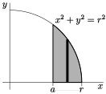

Subsection 1.9.1 Trigonometric Substitution
In this section we discuss substitutions that simplify integrals containing square roots of the form
\begin{align*}
\sqrt{a^2-x^2} && \sqrt{a^2+x^2} && \sqrt{x^2-a^2}.
\end{align*}
When the integrand contains one of these square roots, then we can use trigonometric substitutions to eliminate them. That is, we substitute
\begin{align*}
x&=a\sin u&\text{or}&&
x&=a\tan u&\text{or}&&
x&=a\sec u
\end{align*}
and then use trigonometric identities
\begin{gather*}
\sin^2\theta + \cos^2\theta =1 \quad\text{and}\quad 1+\tan^2\theta= \sec^2\theta
\end{gather*}
to simplify the result. To be more precise, we can
- eliminate \(\sqrt{a^2-x^2}\) from an integrand by substituting \(x=a\sin u\) to give\begin{gather*} \sqrt{a^2-x^2}=\sqrt{a^2-a^2\sin^2 u} =\sqrt{a^2\cos^2 u}=|a\cos u| \end{gather*}
- eliminate \(\sqrt{a^2+x^2}\) from an integrand by substituting \(x=a\tan u\) to give\begin{gather*} \sqrt{a^2+x^2}=\sqrt{a^2+a^2\tan^2 u} =\sqrt{a^2\sec^2 u}=|a\sec u| \end{gather*}
- eliminate \(\sqrt{x^2-a^2}\) from an integrand by substituting \(x=a\sec u\) to give\begin{gather*} \sqrt{x^2-a^2}=\sqrt{a^2\sec^2u-a^2} =\sqrt{a^2\tan^2 u}=|a\tan u| \end{gather*}Be very careful with signs and absolute values when using this substitution. See Example 1.9.6.
When we have used substitutions before, we usually gave the new integration variable, \(u\text{,}\) as a function of the old integration variable \(x\text{.}\) Here we are doing the reverse — we are giving the old integration variable, \(x\text{,}\) in terms of the new integration variable \(u\text{.}\) We may do so, as long as we may invert to get \(u\) as a function of \(x\text{.}\) For example, with \(x=a\sin u\text{,}\) we may take \(u=\arcsin\frac{x}{a}\text{.}\) This is a good time for you to review the definitions of \(\arcsin\theta\text{,}\) \(\arctan\theta\) and \(\arcsec\theta\text{.}\) See Section 2.12, “Inverse Functions”, of the CLP-1 text.
As a warm-up, consider the area of a quarter of the unit circle.
Compute the area of the unit circle lying in the first quadrant.
Solution: We know that the answer is \(\frac\pi4\text{,}\) but we can also compute this as an integral — we saw this way back in Example 1.1.16:
\begin{align*}
\text{area} &= \int_0^1 \sqrt{1-x^2} \dee{x}
\end{align*}
- To simplify the integrand we substitute \(x=\sin u\text{.}\) With this choice \(\diff{x}{u}=\cos u\) and so \(\dee{x}=\cos u \dee{u}\text{.}\)
- We also need to translate the limits of integration and it is perhaps easiest to do this by writing \(u\) as a function of \(x\) — namely \(u(x)=\arcsin x\text{.}\) Hence \(u(0)=0\) and \(u(1)=\frac{\pi}{2}\text{.}\)
- Hence the integral becomes\begin{align*} \int_0^1 \sqrt{1-x^2}\dee{x} &= \int_0^{\frac{\pi}{2}} \sqrt{1-\sin^2u} \cdot \cos u \dee{u}\\ &= \int_0^{\frac{\pi}{2}} \sqrt{\cos^2u} \cdot \cos u \dee{u}\\ &= \int_0^{\frac{\pi}{2}} \cos^2 u \dee{u} \end{align*}Notice that here we have used that the positive square root \(\sqrt{\cos^2 u} = |\cos u|=\cos u\) because \(\cos(u)\geq 0\) for \(0 \leq u \leq \frac\pi2\text{.}\)
- To go further we use the techniques of Section 1.8.\begin{align*} \int_0^1 \sqrt{1-x^2}\dee{x} &= \int_0^{\frac{\pi}{2}}\cos^2 u \dee{u} \qquad\qquad \text{and since $\cos^2u=\frac{1+\cos2u}{2}$}\\ &= \frac{1}{2}\int_0^{\frac{\pi}{2}} (1+\cos(2 u)) \dee{u}\\ &= \frac{1}{2} \bigg[u + \frac{1}{2}\sin(2u) \bigg]_0^{\frac{\pi}{2}}\\ &= \frac{1}{2} \left(\frac{\pi}{2}-0 + \frac{\sin\pi}{2}-\frac{\sin 0}{2} \right)\\ &= \frac{\pi}{4}\checkmark \end{align*}
Example 1.9.2 \(\int \frac{x^2}{\sqrt{1-x^2}}\dee{x}\)
Solution: We proceed much as we did in the previous example.
- To simplify the integrand we substitute \(x=\sin u\text{.}\) With this choice \(\diff{x}{u}=\cos u\) and so \(\dee{x}=\cos u \dee{u}\text{.}\) Also note that \(u=\arcsin x\text{.}\)
- The integral becomes\begin{align*} \int \frac{x^2}{\sqrt{1-x^2}}\dee{x} &= \int \frac{\sin^2u}{\sqrt{1-\sin^2u}} \cdot \cos u \dee{u}\\ &= \int \frac{\sin^2u}{\sqrt{\cos^2u}} \cdot \cos u \dee{u} \end{align*}
- To proceed further we need to get rid of the square-root. Since \(u=\arcsin x\) has domain \(-1\leq x \leq 1\) and range \(-\frac\pi2 \leq u \leq \frac\pi2\text{,}\) it follows that \(\cos u \geq 0\) (since cosine is non-negative on these inputs). Hence\begin{align*} \sqrt{\cos^2u} &= \cos u & \text{when $-\frac\pi2 \leq u \leq \frac\pi2 $} \end{align*}
- So our integral now becomes\begin{align*} \int \frac{x^2}{\sqrt{1-x^2}}\dee{x} &= \int \frac{\sin^2u}{\sqrt{\cos^2u}} \cdot \cos u \dee{u}\\ &= \int \frac{\sin^2u}{\cos u} \cdot \cos u \dee{u}\\ &= \int \sin^2u \dee{u}\\ &= \frac{1}{2} \int (1-\cos 2u) \dee{u} \qquad \text{by Equation }\knowl{./knowl/eq_TRGINTtrigidentityF.html}{\text{1.8.4}}\\ &= \frac{u}{2} - \frac{1}{4}\sin 2u +C\\ &= \frac{1}{2}\arcsin x - \frac{1}{4} \sin(2\arcsin x) +C \end{align*}
- We can simplify this further using a double-angle identity. Recall that \(u = \arcsin x\) and that \(x=\sin u\text{.}\) Then\begin{align*} \sin 2u &= 2 \sin u \cos u\\ \\ \end{align*}Thus our solution is
We can replace \(\cos u\) using \(\cos^2u = 1 - \sin^2u\text{.}\) Taking a square-root of this formula gives \(\cos u= \pm \sqrt{1-\sin^2u}\text{.}\) We need the positive branch here since \(\cos u \geq 0\) when \(-\frac\pi2 \leq u \leq \frac\pi2\) (which is exactly the range of \(\arcsin x\)). Continuing along:
\begin{align*} \sin2u &= 2 \sin u \cdot \sqrt{1-\sin^2 u}\\ &= 2 x \sqrt{1-x^2} \end{align*}\begin{align*} \int \frac{x^2}{\sqrt{1-x^2}}\dee{x} &= \frac{1}{2}\arcsin x - \frac{1}{4} \sin(2\arcsin x) +C\\ &= \frac{1}{2}\arcsin x - \frac{1}{2} x \sqrt{1-x^2} +C \end{align*}
The above two example illustrate the main steps of the approach. The next example is similar, but with more complicated limits of integration.
Example 1.9.3 \(\int_a^r\sqrt{r^2-x^2}\dee{x}\)
Let's find the area of the shaded region in the sketch below.

We'll set up the integral using vertical strips. The strip in the figure has width \(\dee{x}\) and height \(\sqrt{r^2-x^2}\text{.}\) So the area is given by the integral
\begin{align*}
\text{area} &= \int_a^r \sqrt{r^2-x^2}\dee{x}
\end{align*}
Which is very similar to the previous example.
Solution:
- To evaluate the integral we substitute\begin{align*} x&=x(u)=r\sin u & \dee{x} &= \diff{x}{u} \dee{u} =r\cos u\dee{u} \end{align*}It is also helpful to write \(u\) as a function of \(x\) — namely \(u =\arcsin\frac{x}{r}\text{.}\)
- The integral runs from \(x=a\) to \(x=r\text{.}\) These correspond to\begin{align*} u(r) &= \arcsin \frac{r}{r} = \arcsin 1 = \frac{\pi}{2}\\ u(a) &= \arcsin \frac{a}{r} \quad \text{ which does not simplify further} \end{align*}
- The integral then becomes\begin{align*} \int_a^r \sqrt{r^2-x^2} \dee{x} &= \int_{\arcsin(a/r)}^{\frac\pi2} \sqrt{r^2-r^2\sin^2u} \cdot r \cos u \dee{u}\\ &= \int_{\arcsin(a/r)}^{\frac\pi2} r^2 \sqrt{1-\sin^2u} \cdot \cos u \dee{u}\\ &= r^2\int_{\arcsin(a/r)}^{\frac\pi2} \sqrt{\cos^2u} \cdot \cos u \dee{u} \end{align*}To proceed further (as we did in Examples 1.9.1 and 1.9.2) we need to think about whether \(\cos u\) is positive or negative.
- Since \(a\) (as shown in the diagram) satisfies \(0 \leq a \leq r\text{,}\) we know that \(u(a)\) lies between \(\arcsin(0)=0\) and \(\arcsin(1)=\frac\pi2\text{.}\) Hence the variable \(u\) lies between \(0\) and \(\frac\pi2\text{,}\) and on this range \(\cos u \geq 0\text{.}\) This allows us get rid of the square-root:\begin{gather*} \sqrt{\cos^2u} = |\cos u| = \cos u \end{gather*}
- Putting this fact into our integral we get\begin{align*} \int_a^r \sqrt{r^2-x^2} \dee{x} &= r^2\int_{\arcsin(a/r)}^{\frac\pi2} \sqrt{\cos^2u} \cdot \cos u \dee{u}\\ &= r^2 \int_{\arcsin(a/r)}^{\frac\pi2} \cos^2 u \dee{u}\\ \end{align*}Oof! But there is a little further to go before we are done.
Recall the identity \(\cos^2u=\frac{1+\cos2u}{2}\) from Section 1.8
\begin{align*} &= \frac{r^2}{2} \int_{\arcsin(a/r)}^{\frac\pi2} (1 +\cos 2u) \dee{u}\\ &= \frac{r^2}{2} \bigg[u + \frac{1}{2}\sin(2u) \bigg]_{\arcsin(a/r)}^{\frac\pi2}\\ &= \frac{r^2}{2} \left(\frac{\pi}{2} +\frac{1}{2}\sin\pi - \arcsin(a/r) - \frac{1}{2}\sin( 2\arcsin(a/r)) \right)\\ &= \frac{r^2}{2} \left(\frac{\pi}{2} - \arcsin(a/r) - \frac{1}{2}\sin( 2\arcsin(a/r)) \right) \end{align*} -
We can again simplify the term \(\sin( 2\arcsin(a/r))\) using a double angle identity. Set \(\theta = \arcsin(a/r)\text{.}\) Then \(\theta\) is the angle in the triangle on the right below. By the double angle formula for \(\sin(2\theta)\) (Equation 1.8.2)
\begin{align*} \sin(2\theta)&=2\sin\theta\ \cos\theta\\ &=2\ \frac{a}{r}\ \frac{\sqrt{r^2-a^2}}{r}. \end{align*} - So finally the area is\begin{align*} \text{area} &= \int_a^r \sqrt{r^2-x^2} \dee{x}\\ &= \frac{r^2}{2} \left(\frac{\pi}{2} - \arcsin(a/r) - \frac{1}{2}\sin( 2\arcsin(a/r)) \right)\\ &= \frac{\pi r^2}{4} - \frac{r^2}{2} \arcsin(a/r) - \frac{a}{2} \sqrt{r^2-a^2} \end{align*}
-
This is a relatively complicated formula, but we can make some “reasonableness” checks, by looking at special values of \(a\text{.}\)
- If \(a=0\) the shaded region, in the figure at the beginning of this example, is exactly one quarter of a disk of radius \(r\) and so has area \(\frac{1}{4}\pi r^2\text{.}\) Substituting \(a=0\) into our answer does indeed give \(\frac{1}{4}\pi r^2\text{.}\)
- At the other extreme, if \(a=r\text{,}\) the shaded region disappears completely and so has area \(0\text{.}\) Subbing \(a=r\) into our answer does indeed give \(0\text{,}\) since \(\arcsin 1=\frac{\pi}{2}\text{.}\)
Example 1.9.4 \(\int_a^r x\sqrt{r^2-x^2}\dee{x}\)
The integral \(\int_a^r x\sqrt{r^2-x^2}\dee{x}\) looks a lot like the integral we just did in the previous 3 examples. It can also be evaluated using the trigonometric substitution \(x= r\sin u\) — but that is unnecessarily complicated. Just because you have now learned how to use trigonometric substitution 1 To paraphrase the Law of the Instrument, possibly Mark Twain and definitely some psychologists, when you have a shiny new hammer, everything looks like a nail. doesn't mean that you should forget everything you learned before.
Solution: This integral is much more easily evaluated using the simple substitution \(u=r^2-x^2\text{.}\)
- Set \(u=r^2-x^2\text{.}\) Then \(\dee{u}=-2x\dee{x}\text{,}\) and so\begin{align*} \int_a^r x\sqrt{r^2-x^2}\dee{x} &=\int_{r^2-a^2}^0 \sqrt{u}\ \frac{\dee{u}}{-2}\\ &=-\frac{1}{2}\bigg[\frac{u^{3/2}}{3/2}\bigg]_{r^2-a^2}^0\\ &=\frac{1}{3}\big[r^2-a^2\big]^{3/2} \end{align*}
Enough sines and cosines — let us try a tangent substitution.
Example 1.9.5 \(\int\frac{\dee{x}}{x^2\sqrt{9+x^2}}\)
Solution: As per our guidelines at the start of this section, the presence of the square root term \(\sqrt{3^2+x^2}\) tells us to substitute \(x=3\tan u\text{.}\)
- Substitute\begin{align*} x&=3\tan u & \dee{x} &= 3\sec^2 u\dee{u} \end{align*}This allows us to remove the square root:\begin{align*} \sqrt{9+x^2} &=\sqrt{9+9\tan^2u} =3\sqrt{1+\tan^2u} =3\sqrt{\sec^2 u} =3|\sec u| \end{align*}
- Hence our integral becomes\begin{align*} \int \frac{\dee{x}}{x^2\sqrt{9+x^2}} &= \int \frac{3\sec^2 u}{9\tan^2u \cdot 3|\sec u|} \dee{u} \end{align*}
- To remove the absolute value we must consider the range of values of \(u\) in the integral. Since \(x=3\tan u\) we have \(u = \arctan(x/3)\text{.}\) The range 2 To be pedantic, we mean the range of the “standard” arctangent function or its “principle value”. One can define other arctangent functions with different ranges. of arctangent is \(-\frac{\pi}{2} \leq \arctan \leq \frac{\pi}{2}\) and so \(u=\arctan(x/3)\) will always like between \(-\frac{\pi}{2}\) and \(+\frac{\pi}{2}\text{.}\) Hence \(\cos u\) will always be positive, which in turn implies that \(|\sec u|=\sec u\text{.}\)
- Using this fact our integral becomes:\begin{align*} \int \frac{\dee{x}}{x^2\sqrt{9+x^2}} &= \int \frac{3\sec^2 u}{27 \tan^2u |\sec u|} \dee{u}\\ &= \frac{1}{9}\int \frac{\sec u}{\tan^2u} \dee{u} & \text{since $\sec u \gt 0$} \end{align*}
- Rewrite this in terms of sine and cosine\begin{align*} \int \frac{\dee{x}}{x^2\sqrt{9+x^2}} &= \frac{1}{9}\int \frac{\sec u}{\tan^2u} \dee{u}\\ &= \frac{1}{9} \int \frac{1}{\cos u}\cdot \frac{\cos^2u}{\sin^2 u}\dee{u} = \frac{1}{9} \int \frac{\cos u}{\sin^2 u}\dee{u}\\ \end{align*}
Now we can use the substitution rule with \(y=\sin u\) and \(\dee{y}=\cos u\dee{u}\)
\begin{align*} &= \frac{1}{9} \int \frac{\dee{y}}{y^2} \\ &= -\frac{1}{9y} +C \\ &= -\frac{1}{9\sin u}+C \end{align*} -
The original integral was a function of \(x\text{,}\) so we still have to rewrite \(\sin u\) in terms of \(x\text{.}\) Remember that \(x=3 \tan u\) or \(u=\arctan(x/3)\text{.}\) So \(u\) is the angle shown in the triangle below and we can read off the triangle that
\begin{align*} \sin u &= \frac{x}{\sqrt{9+x^2}}\\ \implies \int\frac{\dee{x}}{x^2\sqrt{9+x^2}} &= -\frac{\sqrt{9+x^2}}{9x} +C \end{align*}
Example 1.9.6 \(\int \frac{x^2}{\sqrt{x^2-1}} \dee{x}\)
Solution: This one requires a secant substitution, but otherwise is very similar to those above.
- Set \(x = \sec u\) and \(\dee{x}=\sec u \tan u \dee{u}\text{.}\) Then\begin{align*} \int \frac{x^2}{\sqrt{x^2-1}} \dee{x} &= \int \frac{\sec^2 u}{\sqrt{\sec^2u-1}} \sec u \tan u \dee{u}\\ &= \int \sec^3 u \cdot \frac{ \tan u}{\sqrt{\tan^2u}} \dee{u} \qquad \text{since $\tan^2u = \sec^2u-1$}\\ &= \int \sec^3u \cdot \frac{\tan u}{|\tan u|} \dee{u} \end{align*}
-
As before we need to consider the range of \(u\) values in order to determine the sign of \(\tan u\text{.}\) Notice that the integrand is only defined when either \(x \lt -1\) or \(x \gt 1\text{;}\) thus we should treat the cases \(x \lt -1\) and \(x \gt 1\) separately. Let us assume that \(x \gt 1\) and we will come back to the case \(x \lt -1\) at the end of the example.
When \(x \gt 1\text{,}\) our \(u=\arcsec x\) takes values in \((0,\frac\pi2)\text{.}\) This follows since when \(0 \lt u \lt \frac\pi2\text{,}\) we have \(0 \lt \cos u \lt 1\) and so \(\sec u \gt 1\text{.}\) Further, when \(0 \lt u \lt \frac\pi2\text{,}\) we have \(\tan u \gt 0\text{.}\) Thus \(|\tan u|=\tan u\text{.}\)
- Back to our integral, when \(x> 1\text{:}\)\begin{align*} \int \frac{x^2}{\sqrt{x^2-1}} \dee{x} &= \int \sec^3u \cdot \frac{\tan u}{|\tan u|} \dee{u}\\ &= \int \sec^3u \dee{u} & \text{since } \tan u\geq 0\\ \end{align*}
This is exactly Example 1.8.22
\begin{align*} &= \frac{1}{2}\sec u \tan u + \frac{1}{2} \log| \sec u + \tan u| +C \end{align*} - Since we started with a function of \(x\) we need to finish with one. We know that \(\sec u = x\) and then we can use trig identities\begin{align*} \tan^2 u &= \sec^2 u - 1 = x^2-1 & \text{so } \tan u &= \pm \sqrt{x^2-1}\\ \end{align*}Thus
but we know
\begin{align*} \tan u & \geq 0 & \text{so } \tan u &= \sqrt{x^2-1} \end{align*}\begin{align*} \int \frac{x^2}{\sqrt{x^2-1}} \dee{x} &= \frac{1}{2}x\sqrt{x^2-1} + \frac{1}{2}\log| x +\sqrt{x^2-1}| +C \end{align*} - The above holds when \(x \gt 1\text{.}\) We can confirm that it is also true when \(x \lt -1\) by showing the right-hand side is a valid antiderivative of the integrand. To do so we must differentiate our answer. Notice that we do not need to consider the sign of \(x+\sqrt{x^2-1}\) when we differentiate since we have already seen that\begin{align*} \diff{}{x} \log|x| &= \frac{1}{x} \end{align*}when either \(x \lt 0\) or \(x \gt 0\text{.}\) So the following computation applies to both \(x \gt 1\) and \(x \lt -1\text{.}\) The expressions become quite long so we differentiate each term separately:\begin{align*} \diff{}{x} \left[ x\sqrt{x^2-1} \right] &=\left[ \sqrt{x^2-1} + \frac{x^2}{\sqrt{x^2-1}} \right]\\ &= \frac{1}{\sqrt{x^2-1}} \left[(x^2-1) + x^2 \right]\\ \diff{}{x} \log\bigg| x +\sqrt{x^2-1} \bigg| &= \frac{1}{x+\sqrt{x^2-1}} \cdot \left[ 1+\frac{x}{\sqrt{x^2-1}} \right]\\ &= \frac{1}{x+\sqrt{x^2-1}} \cdot \frac{x+\sqrt{x^2-1}}{\sqrt{x^2-1}}\\ &= \frac{1}{\sqrt{x^2-1}} \end{align*}Putting things together then gives us\begin{align*} & \diff{}{x} \left[ \frac{1}{2}x\sqrt{x^2-1} + \frac{1}{2}\log| x +\sqrt{x^2-1}| +C \right]\\ &= \frac{1}{2\sqrt{x^2-1}} \left[(x^2-1) + x^2 + 1 \right]+0\\ &= \frac{x^2}{\sqrt{x^2-1}} \end{align*}This tells us that our answer for \(x \gt 1\) is also valid when \(x \lt -1\) and so\begin{align*} \int \frac{x^2}{\sqrt{x^2-1}} \dee{x} &= \frac{1}{2}x\sqrt{x^2-1} + \frac{1}{2}\log| x +\sqrt{x^2-1}| +C \end{align*}when \(x \lt -1\) and when \(x \gt 1\text{.}\)
In this example, we were lucky. The answer that we derived for \(x>1\) happened to be also valid for \(x<-1\text{.}\) This does not always happen with the \(x=a\,\sec u\) substitution. When it doesn't, we have to apply separate \(x>a\) and \(x<-a\) analyses that are very similar to our \(x>1\) analysis above. Of course that doubles the tedium. So in the CLP-2 problem book, we will not pose questions that require separate \(x>a\) and \(x<-a\) computations.
The method, as we have demonstrated it above, works when our integrand contains the square root of very specific families of quadratic polynomials. In fact, the same method works for more general quadratic polynomials — all we need to do is complete the square 3 If you have not heard of “completing the square” don't worry. It is not a difficult method and it will only take you a few moments to learn. It refers to rewriting a quadratic polynomial \(P(x) = ax^2 + bx + c\) as \(P(x)= a(x+d)^2 +e\) for new constants \(d,e\text{.}\).
Example 1.9.7 \(\int_3^5\frac{\sqrt{x^2-2x-3}}{x-1}\dee{x}\)
This time we have an integral with a square root in the integrand, but the argument of the square root, while a quadratic function of \(x\text{,}\) is not in one of the standard forms \(\sqrt{a^2-x^2}\text{,}\) \(\sqrt{a^2+x^2}\text{,}\) \(\sqrt{x^2-a^2}\text{.}\) The reason that it is not in one of those forms is that the argument, \(x^2-2x-3\text{,}\) contains a term , namely \(-2x\) that is of degree one in \(x\text{.}\) So we try to manipulate it into one of the standard forms by completing the square.
Solution:
- We first rewrite the quadratic polynomial \(x^2-2x-3\) in the form \((x-a)^2+b\) for some constants \(a,b\text{.}\) The easiest way to do this is to expand both expressions and compare coefficients of \(x\text{:}\)\begin{align*} x^2-2x-3 &= (x-a)^2+b = (x^2-2ax+a^2)+b \end{align*}So — if we choose \(-2a=-2\) (so the coefficients of \(x^1\) match) and \(a^2+b=-3\) (so the coefficients of \(x^0\) match), then both expressions are equal. Hence we set \(a=1\) and \(b=-4\text{.}\) That is\begin{align*} x^2-2x-3 &= (x-1)^2-4 \end{align*}Many of you may have seen this method when learning to sketch parabolas.
- Once this is done we can convert the square root of the integrand into a standard form by making the simple substitution \(y=x-1\text{.}\) Here goes\begin{align*} & \int_3^5\frac{\sqrt{x^2-2x-3}}{x-1}\dee{x}\\ &=\int_3^5\frac{\sqrt{(x-1)^2-4}}{x-1}\dee{x}\\ &=\int_2^4\frac{\sqrt{y^2-4}}{y}\dee{y} &\text{with } y=x-1, \dee{y} = \dee{x}\\ &=\int_0^{\pi/3}\frac{\sqrt{4\sec^2u-4}}{2\sec u}\ 2\sec u\tan u\dee{u} &\text{with } y=2\sec u\\ && \text{and }\dee{y} = 2\sec u\tan u\dee{u} \end{align*}Notice that we could also do this in fewer steps by setting \((x-1)=2\sec u, \dee{x}=2\sec u\tan u\dee{u}\text{.}\)
-
To get the limits of integration we used that
- the value of \(u\) that corresponds to \(y=2\) obeys \(2=y=2\sec u=\frac{2}{\cos u}\) or \(\cos u=1\text{,}\) so that \(u=0\) works and
- the value of \(u\) that corresponds to \(y=4\) obeys \(4=y=2\sec u=\frac{2}{\cos u}\) or \(\cos u=\half\text{,}\) so that \(u=\frac{\pi}{3}\) works.
- Now returning to the evaluation of the integral, we simplify and continue.\begin{align*} \int_3^5\frac{\sqrt{x^2-2x-3}}{x-1}\dee{x} &=\int_0^{\pi/3} 2\sqrt{\sec^2 u -1}\ \tan u\dee{u}\\ &=2\int_0^{\pi/3} \tan^2 u\dee{u} \qquad\text{since } \sec^2u=1+\tan^2u\\ \end{align*}
In taking the square root of \(\sec^2u-1=\tan^2u\) we used that \(\tan u\ge 0\) on the range \(0\le u\le \frac{\pi}{3}\text{.}\)
\begin{align*} &=2\int_0^{\pi/3}\big[ \sec^2 u-1\big]\dee{u} \qquad\quad\text{since $\sec^2u=1+\tan^2u$, again}\\ &=2\Big[\tan u - u\Big]_0^{\pi/3}\\ &=2\big[\sqrt{3}-\frac{\pi}{3}\big] \end{align*}